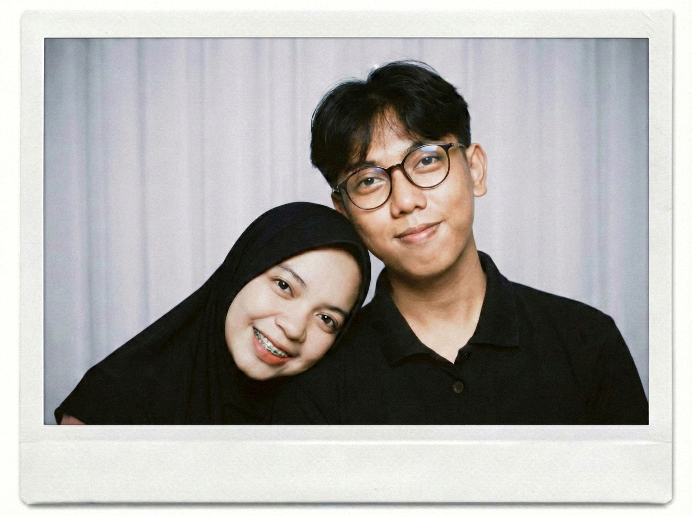
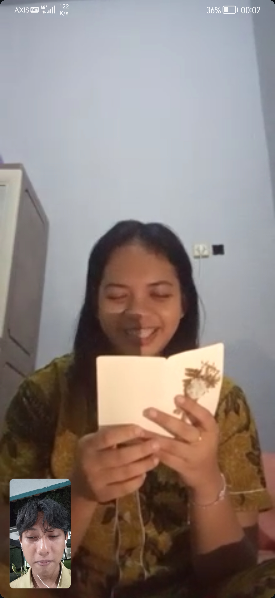
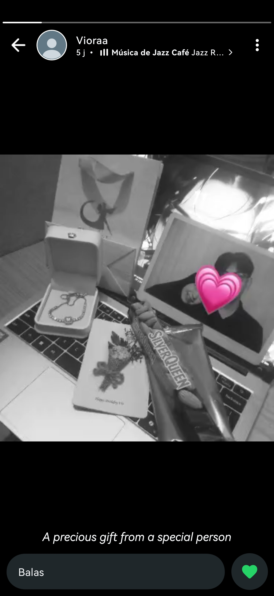
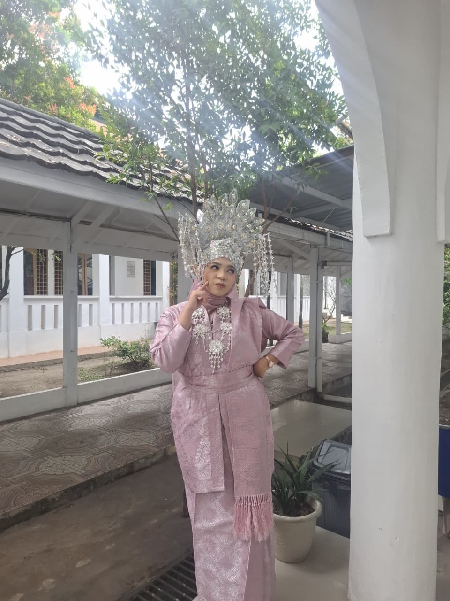
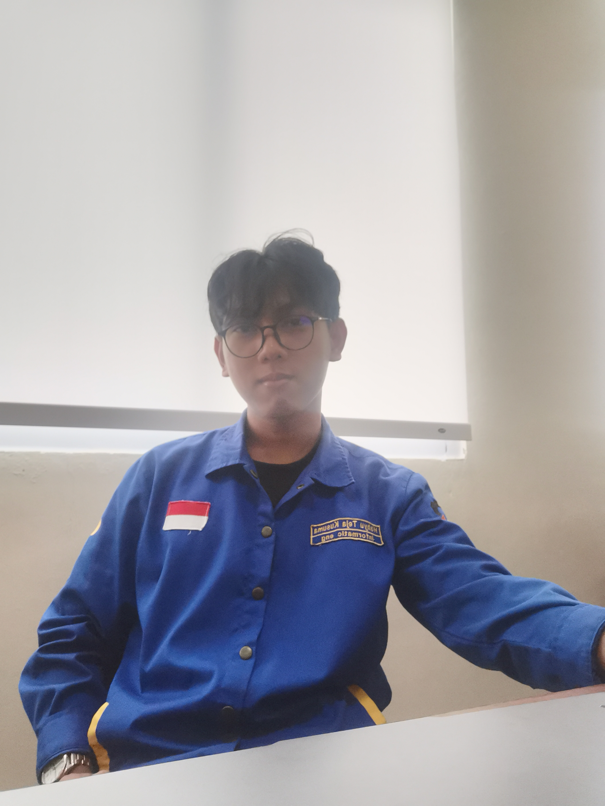
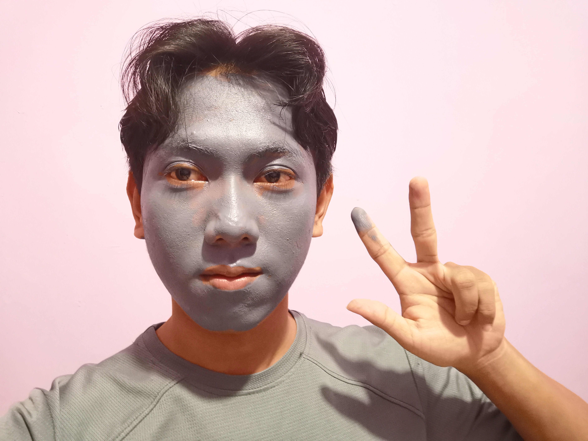
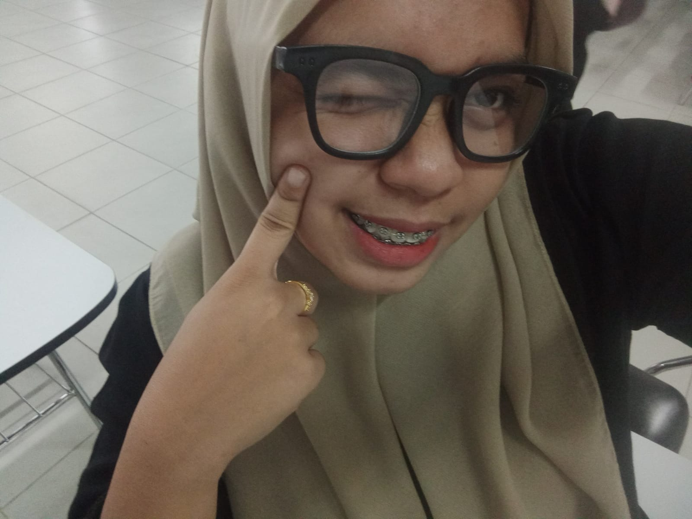
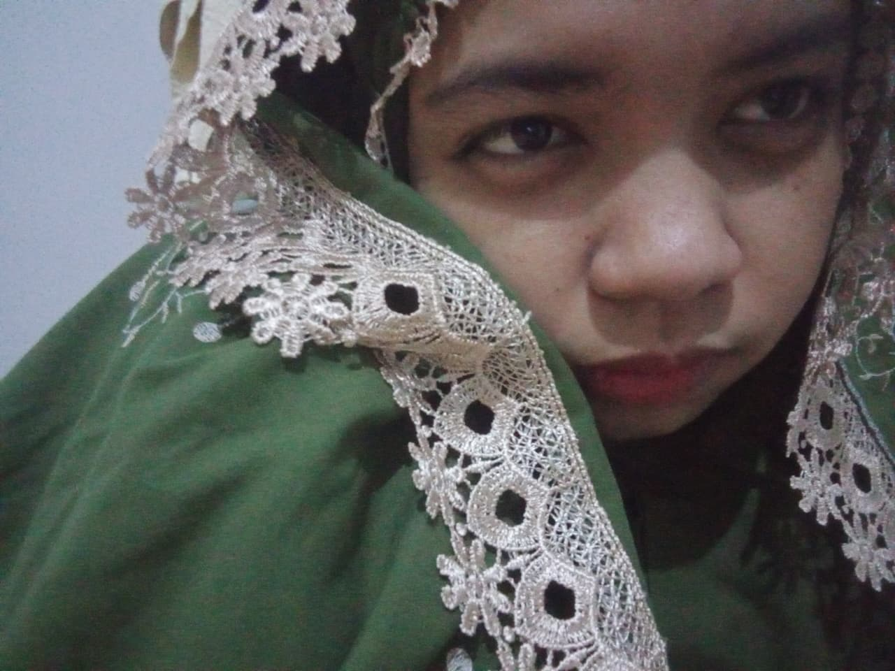

1.634
Kilometer
Banyumas - Riau
Secara logika, ini jarak yang jauh banget.
🌐 Source: OpenStreetMap (OSM) Routing DataUntukmu Vio
16 Maret 2026
Sejak kita makin deket, Mas ngerasa ada yang beda. Dari hal-hal yang Vio lakuin, termasuk waktu ngirim buket merah putih itu, Mas sadar kalau jarak sejauh apa pun nggak pernah bisa ngehalangin Vio buat ngasih perhatian ke Mas.
Makasih ya udah mau nerima Mas apa adanya. Semenjak ada Vio, Mas ngerasa hari-hari Mas jauh lebih berwarna dan punya tujuan.
Mas nggak pernah takut sama jarak Banyumas - Riau, Mas cuma takut kehilangan Vio. Setiap kilometer ini bakal jadi saksi kalau perasaan Mas jauh lebih besar dari jaraknya.
Dengan sepenuh hati,
Mas








Memori Kita
Tayang dan Mas
Foto yang pernah Mas cetak, dan gelang yang sekarang ada di tangan Vio itu... cuma cara kecil Mas buat ngakalin jarak.
"Detail kecil adalah bukti sayang. Hal ini sejalan dengan prinsip 'Small Things Often' dari The Gottman Institute."
Mas tau LDR Banyumas - Riau itu nggak gampang dan butuh effort ekstra.
Tapi kalau tujuannya itu Vio, Mas berani.
Jadi... kita jalanin bareng yuk?
Mau ya jadi pacar Mas?A Long Distance Journey • Banyumas to Riau
Made with ❤️ by Wahyu Teja Kusuma for Desvitha Viona BR Sembiring